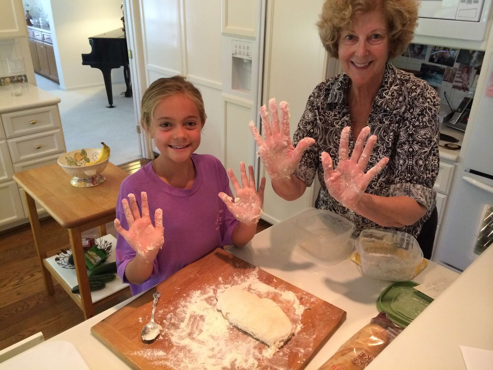

A Pre-Internet Memory
A story my grandmother told me — and the hour she has never forgotten.
Optional background music. Press play, then read. This is the sound of the hour she waited — the story reads the same with the sound off.
Music: Eerie Horror Cinematic Background by Universfield. This is not a recording of Roddy — it is the feeling of the story.
Jump to a section:
The Plan · The Waiting · The Pay Phone · She Appeared · What Stayed With Me · Roddy
My grandma, Roddy, is 78 years old now, which means she grew up long before cell phones, GPS, or the internet became part of everyday life. When I asked her what she remembered most about living without that technology, she told me about one night when the inability to contact someone stopped feeling normal and became terrifying.
I · AN ORDINARY PLAN
Roddy was a teenager at the time and had made plans to meet a friend in town. Like most plans then, everything had been decided beforehand: where they would meet, what time they would arrive, and roughly when they would be home. Once Roddy left the house, there was no way for anyone to reach her.
At first, nothing seemed unusual. Roddy arrived at their meeting place and waited.
Her friend did not show up.
II · THE WAITING
Ten minutes passed.
Then twenty.
Then almost an hour.
Today, Roddy could have pulled out her phone. She could have sent a text, checked her friend’s location, called her parents, or looked online to see whether there had been an accident nearby.
Send a text.
Check her location.
Call her parents.
Search for an accident nearby.
Instead, she knew absolutely nothing.
What was going through her head. Click each thought below and it will open in the box underneath. They get worse in order, left to right.
She forgot · She is late · The car broke down · Something terrible
The longer she waited, the worse the possibilities became.
Or maybe something terrible had happened.
Roddy remembers reaching the point where annoyance turned into fear. Every unfamiliar car made her look up. Every passing minute made the silence feel heavier. She had no way to tell whether her friend was ten minutes away or lying injured somewhere on the side of the road.
III · THE PAY PHONE
Eventually, Roddy found a pay phone and called her friend’s house.
No answer.
That was the moment she remembers feeling truly horrified.
There was no next step. There was no second number to call. There was no location to check. Her friend was simply somewhere in the world, and Roddy had no way of knowing where.
| If this happened to me today | What Roddy actually had |
|---|---|
| Send a text | Nothing |
| Check her location | Nothing |
| Call her cell phone | One pay phone, one home number |
| Message a mutual friend | Nothing |
| Search for an accident nearby | Nothing |
She called home next and told her parents what was happening. All they could tell her was this:
Stay where you are and wait.
So she did.
IV · SHE APPEARED
Eventually, her friend appeared. She had gotten turned around on the way there and had stopped to ask someone for directions. She was embarrassed and apologetic, completely unaware of how frightening the delay had become.
Nothing terrible had happened.
But Roddy still remembers the feeling of those minutes before she knew that.
THE NIGHT, IN ORDER
- The plan is made in person: a place, a time, a rough hour to be home.
- Roddy leaves the house. From this moment, no one can reach her.
- She arrives at the meeting place and waits.
- Ten minutes. Then twenty. Then almost an hour.
- She finds a pay phone and calls her friend’s house. No answer.
- She calls home. Her parents tell her to stay where she is.
- Her friend appears, lost and apologetic, with no idea what the hour was like.
V · WHAT STAYED WITH ME
What struck me most about her story was not simply that communication used to be slower. It was how much uncertainty people had to tolerate. Today, we are accustomed to knowing where people are. A delayed text or unanswered call can make us nervous, but there are usually other ways to find information.
For Roddy, there were moments when there was simply no information at all.
Someone could leave the house and, for hours,
effectively disappear.
(The line above is faded on purpose. Hover over it, or press Tab, to read it.)
Growing up with cell phones, I find that idea almost horrifying on its own. I am used to thinking of communication as immediate and constant. Roddy grew up in a world where sometimes the only thing you could do was stand in one place, imagine every possibility, and wait for someone to appear.
VI · RODDY
This is the grandmother in the story. She is the reason I know it at all — and the reason I will never quite be able to imagine standing on a corner for an hour with no way to know anything.

Roddy taught me to make biscuits before she ever told me this story.

The two of us now — the afternoon she told me about the night she waited.
Earlier versions of this page: version one · version two